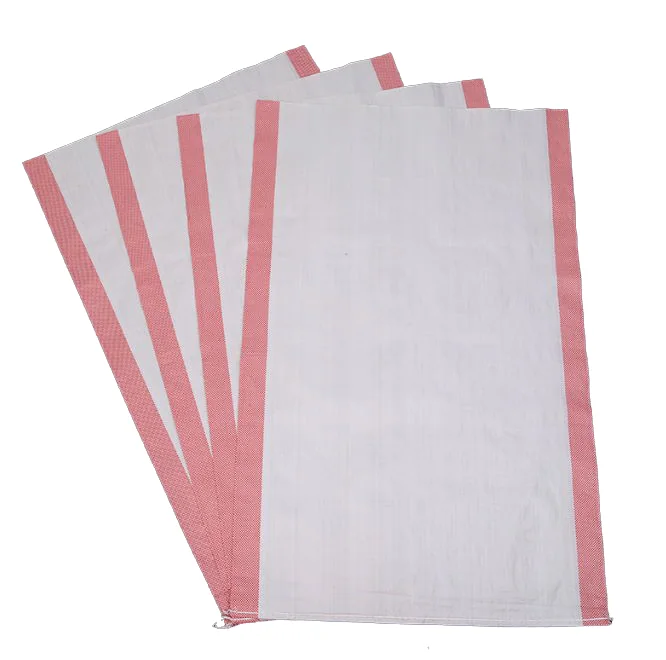
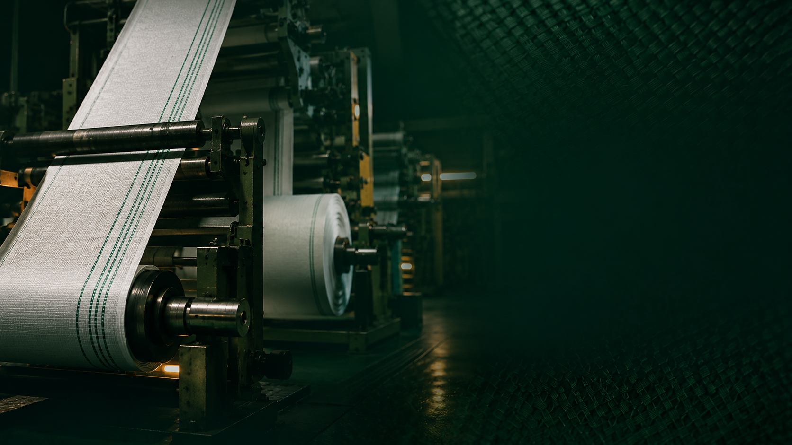
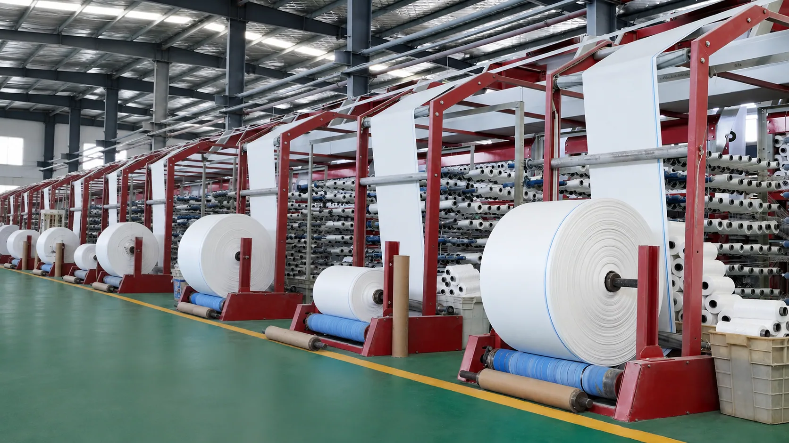
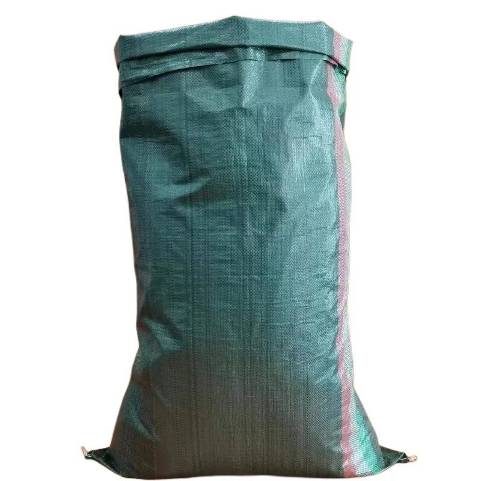
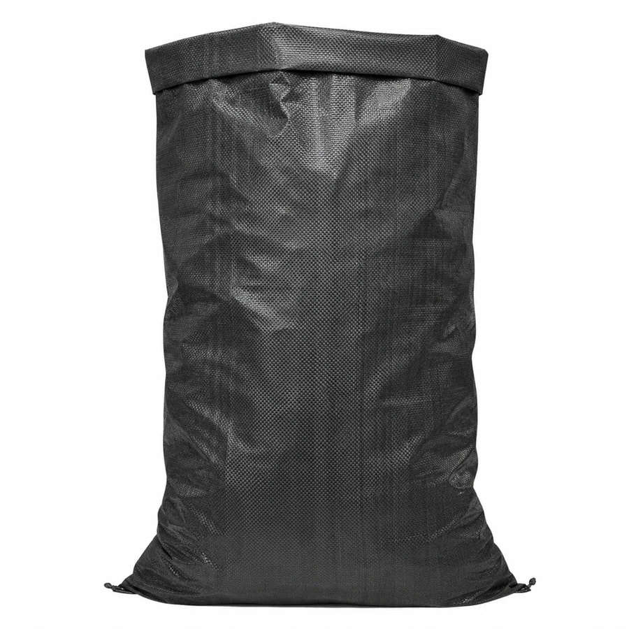
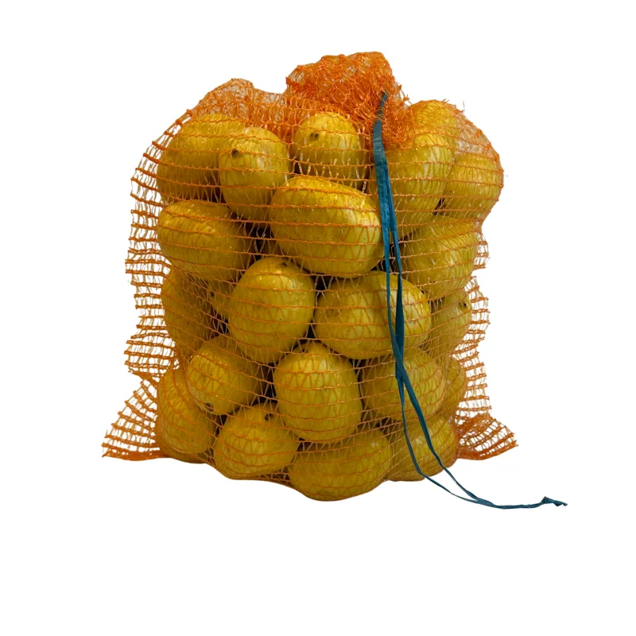
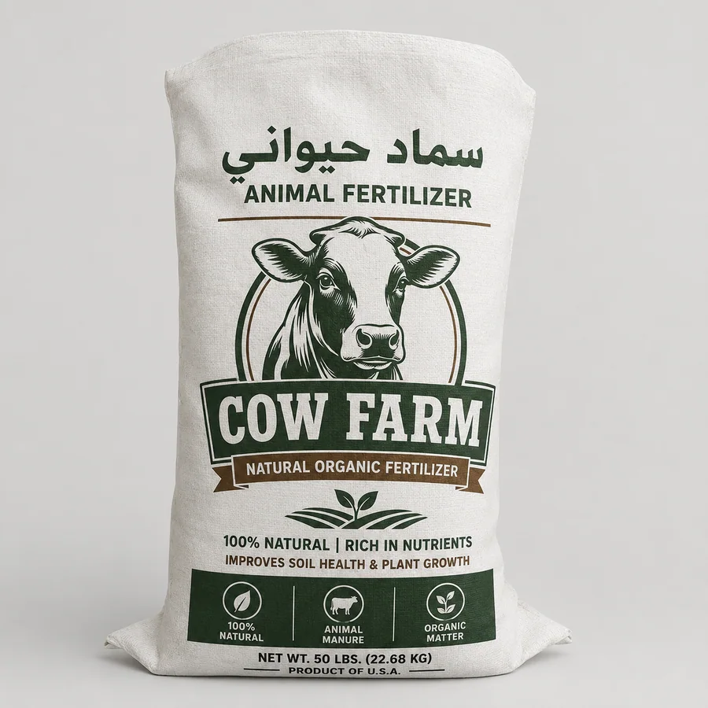
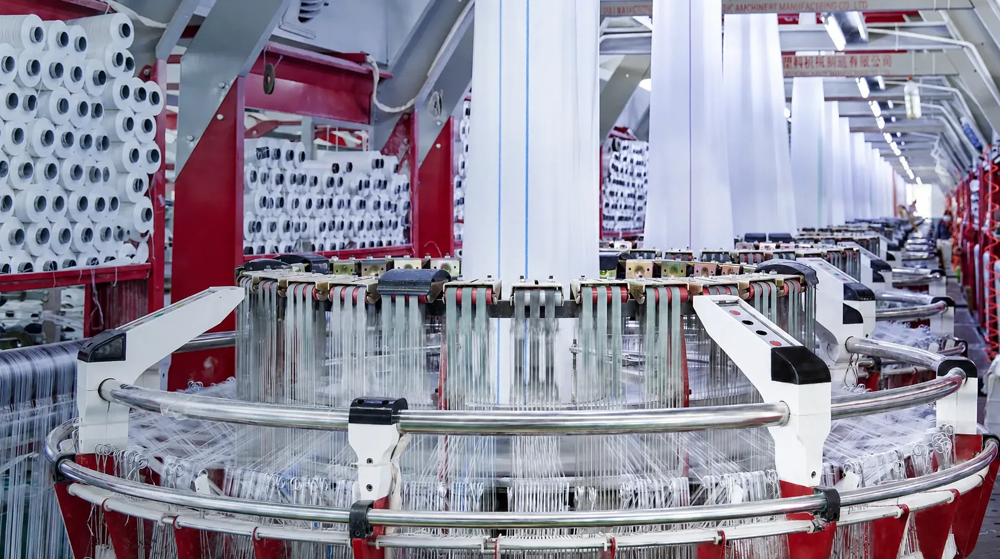
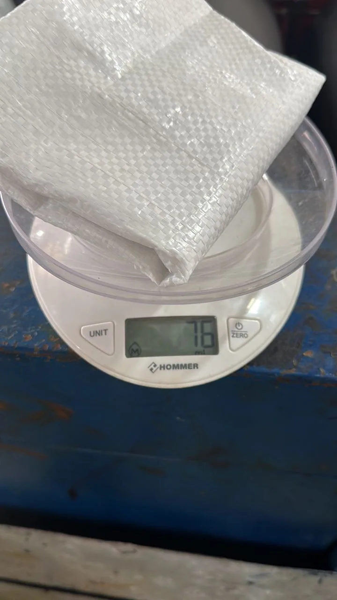

أكياس منسوجة للاستخدامات اليومية
ننسج القوة.نحمي منتجك.
شركة الاسكا لصناعة أكياس الأعلاف والأكياس المنسوجة، نقدم حلول تعبئة عملية للأرز والأعلاف والفحم والخضروات والأسمدة.
ALASKA2019ZLITEN · LIBYA
05فئات منتجات
2019بداية العمل
زليتنموقع المصنع

01صناعة وتشكيل
من نحن
صناعة محلية برؤية عملية
من مدينة زليتن، تعمل الاسكا على تصنيع الأكياس المنسوجة لتلبية احتياجات التعبئة في قطاعات الزراعة والغذاء والتجارة. نركز على المنتج المناسب والتنفيذ الواضح والمتابعة في كل مرحلة.
خامة PPحلول متعددةمتابعة الجودة
ALASKAصناعة ليبية منذ 2019
منتجاتنا
كيس مناسب لكل استخدام
مجموعة من حلول التعبئة المنسوجة المخصصة للمنتجات الزراعية والغذائية والتجارية.





كيف نصنع
من الحبيبات إلى كيس جاهز
رحلة تصنيع مترابطة تحول خامات البولي بروبلين إلى نسيج عملي معد للتعبئة.
تجهيز الخام
تجهيز حبيبات البولي بروبلين للبدء في عملية الإنتاج.
إنتاج الشرائط
تشكيل الخام إلى شرائط متجانسة وتجهيزها للنسيج.
النسج والتجهيز
نسج الشرائط وتشكيل الأكياس وفق فئة الاستخدام.
الفحص النهائي
متابعة العينات والتشطيب قبل تجهيز المنتج.
الجودة
العناية تبدأ من التفاصيل
تتم متابعة عينات الإنتاج خلال مراحل التجهيز، مع الاهتمام بانتظام النسيج والتشطيب وملاءمة الكيس للاستخدام المطلوب.
- 01متابعة العينات
- 02فحص النسيج
- 03مراجعة التشطيب

QCمتابعة الجودة
موقع المصنع
تواصل معنا
تواصلعبر البريد
اكتب رسالتك، ثم اختر منصة البريد التي تفضل إرسالها من خلالها.
الرسالة جاهزة
بأي منصة بريد تود إرسالها؟
سيتم فتح رسالة جديدة تحتوي على البيانات التي أدخلتها.